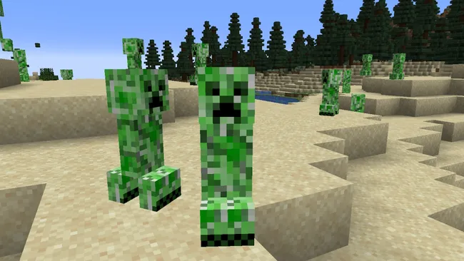

How the Creeper started Creeping
October 07, 2026 by Rajay Bellinfantie

The story of the Creeper - it was supposed to be the pig, but Notch mixed the height and the width values, or the rotation of it, so it's standing up instead of lain horizontally. But it did have the AI behaviour of looking at the player. So he just thought it was extremely creepy, with this weird thing walking around, looking at you. So he decided to keep it as a monster. He wrote that a friend said it would be cool if it exploded *laughs* and that brought us to the Creeper.
The face was to clearly, with a limited number of pixels, make it look really dangerous. I think the green colour is supposed to be camouflage. But we're still debating - is it flesh? Or is it more like leaves? Or is it fur? You don't really know just by looking at the pixels. I know Junkboy debates that! *laughs*
Excerpt from JENS BERGENSTEN
Meet the Bat
October 07, 2026 by Rajay Bellinfantie

We've never really understood why criminals are so scared of Batman. Sure, he's a crime-fighting genius who could break every bone in your body for even just thinking about being a wrong 'un, but he's also a grown man dressed as a bat. We refuse to be intimidated by anyone who's costume includes a pointy-eared hat.
Stick us in a dark cave full of Minecraft bats, however, and we'll be weeping in no time. The fourth smallest mob in the game (and the only one capable of flight), these black rats with wings spawn constantly and produce a squeak so shrill you'll wish you were deaf. Bats are actually no physical threat to you in Minecraft, an example of a 'useless mob', but that doesn't mean we can't find them creepy. And our last pickaxe just broke, so it looks like we're trapped in this cave full of them. Save us, Batman!